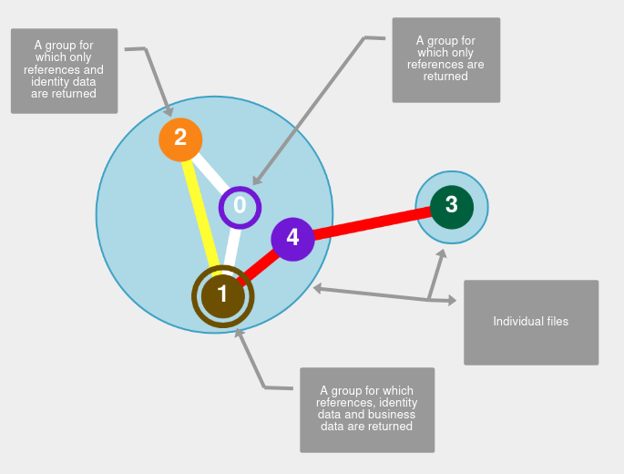

get me link using ESP profile for as the verifying authority
This is a simulator of links between groups (it doesn’t concern itself with the composition of the groups themselves, or the motivation for a given link) and the queries you can make towards the resulting graph.
You are requested to build your own dataset by defining systems, groups belonging to those systems and then links between those groups. The simulator will only show valid options for links creation (meaning that depending on the leftmost group chosen the rightmost list will contain only valid option for potential group to link with, and once this leftmost group is selected the list for link colour will only contain only lvalid options).
There are facilities for local state management and sharing across users.
Queries are separated into link first queries (where the input would be the identifier of a link) and group first query (where the input would be search parameters allowing to match against the content of a group). Only instead of entering parameters you directly identify the direct matches you want your query to have found, and from there on the simulator returns those results complemented with the linked matches which are going to derive from the systems to which you have access.
There is an advance taste of being able to establish to which system you have access when running a link first query, by selecting systems you have would have access when doing such queries.
The whole sheebang is a standalone website which can easily run isolated from the internet on a local server (running straight from the file system is not supported as browser prevent loading CSS from file:// URLs for security reasons). More info can be gotten at the github repository
Direct matches are identified using the number of the group without text decoration, whereas groups returned as a linked match are underlined(not visible in the legend below)
